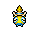
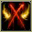
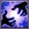

Pokédex / #206
Dunsparce #206
Normal
If spotted, it escapes by burrowing with its tail. It can float just slightly using its wings.
Generation 2 · Johto

Stats
| Attack | 70 | |
|---|---|---|
| Defense | 70 | |
| Sp. Atk | 65 | |
| Sp. Def | 65 |
In the wild
| Wild level | 30–40 |
|---|---|
| HP | 100 |
| Experience | 10 |
| Egg groups | Field |
Evolution
- Does not evolve.
Moves
| Level | Move | Type | Category | Power | Energy | Cooldown | Effect | |
|---|---|---|---|---|---|---|---|---|
| 1 | Tackle | Normal | Physical | 15 | 15 | 1s | Tackle is one of the most common and basic moves a Pokemon learns. It deals damage with no additional effects. | |
| 1 |  | Rage | Normal | Physical | 20 | 100 | 15s | Rage inflicts damage, hitting the target 2-5 times per use. |
| 1 | Defense Curl | Normal | Status | – | 60 | 60s | Defense Curl raises the user's Defense by two stages. | |
| 3 | Rollout | Rock | Physical | 5 | 70 | 35s | Rollout inflicts damage over five turns and raises the user's Speed by two stages. | |
| 6 |  | Spite | Ghost | Status | – | 10 | 30s | The user drain 100-200 energy from the target. |
| 8 | Pursuit | Dark | Physical | 40 | 40 | 6s | Pursuit deals damage and has no secondary effect. | |
| 11 | Screech | Normal | Status | – | 100 | 35s | Screech lowers the target's Defense by two stages. | |
| 13 | Mud-Slap | Ground | Special | 20 | 30 | 10s | Mud-Slap deals damage and lowers the target's Accuracy by one stage. | |
| 16 | Yawn | Normal | Status | – | 100 | 95s | In the turn that Yawn is used, the only effect will be the user yawning at the target. At the end of the next turn, the target (if still active) will fall asleep unless it gets affected by a major status condition in the meantime, a status-protecting move is used (like Safeguard or Uproar), or the battle ends. | |
| 18 | Ancient Power | Rock | Special | 60 | 70 | 14s | Ancient Power inflicts damage and has a 10% chance of raising all of the user's stats by one stage. | |
| 21 | Body Slam | Normal | Physical | 85 | 85 | 13s | Body Slam deals damage and has a 30% chance of paralyzing the target. | |
| 23 | Drill Run | Ground | Physical | 27 | 80 | 15s | Drill Run deals damage and has an increased critical hit ratio. | |
| 26 | Roost | Flying | Status | – | 90 | 120s | User recovers half of its max HP. Flying types temporarily lose Ground type immunity. | |
| 28 | Take Down | Normal | Physical | 90 | 90 | 14s | Take Down deals damage and has no secondary effect. | |
| 31 | Coil | Poison | Status | – | 70 | 60s | Coil raises the user's Attack, Defense by by one stage each and clear Accuracy . | |
| 33 | Dig | Ground | Physical | 80 | 100 | 20s | Dig does damage and has no secondary effect. | |
| 36 | Glare | Normal | Status | – | 15 | 13s | Glare paralyzes the target. | |
| 38 | Double-Edge | Normal | Physical | 120 | 120 | 18s | Double-Edge deals damage and has no secondary effect. | |
| 41 | Endeavor | Normal | Physical | 100 | 90 | 15s | Endeavor deals damage and has no secondary effect. | |
| 43 | Air Slash | Flying | Special | 75 | 80 | 17s | Air Slash deals damage and has a 30% chance of causing the target to flinch. | |
| 46 | Dragon Rush | Dragon | Physical | 100 | 110 | 23s | The user tackles the target while exhibiting overwhelming menace. This may also make the target flinch. | |
| 48 | Endure | Normal | Status | – | 120 | 90s | The user endures any attack with at least 1 HP. Its chance of failing rises if it is used in succession. | |
| 51 | Flail | Normal | Physical | 100 | 100 | 18s | Flail inflicts damage. Its power is higher when the user's HP is lower. |
Field abilities
DigStrengthRock SmashHeadbutt
Special abilities
Serena GraceRun Away
Egg moves
AgilityAncient PowerAstonishBideBiteCurseHeadbuttHexMagic CoatSecret PowerSleep TalkSnoreTrump Card
Technical machines
BideBlizzardCalm MindDefense CurlDouble EdgeDouble TeamDream EaterEarthquakeFire BlastFlamethrowerHeadbuttIce BeamIron TailMimicMud SlapNightmarePoison JabRageRain DanceRestRock SlideRock TombShadow BallShock WaveSolar BeamSubstituteThunderThunder WaveThunderboltToxicWater PulseZap Cannon
Drops
| Item | Amount | Chance | |
|---|---|---|---|
| water gem | 1–13 | 92.6% | |
| water pendant | 1 | 52.1% | |
| pot of water | 1 | 33.3% | |
| dunsparce doll | 1 | 0.1% | |
| held silk scarf | 1 | 0.01% | |
| TM 10 | 1 | 0.005% | |
| TM 62 | 1 | 0.005% | |
| Love Plate | 1 | 0.002% |